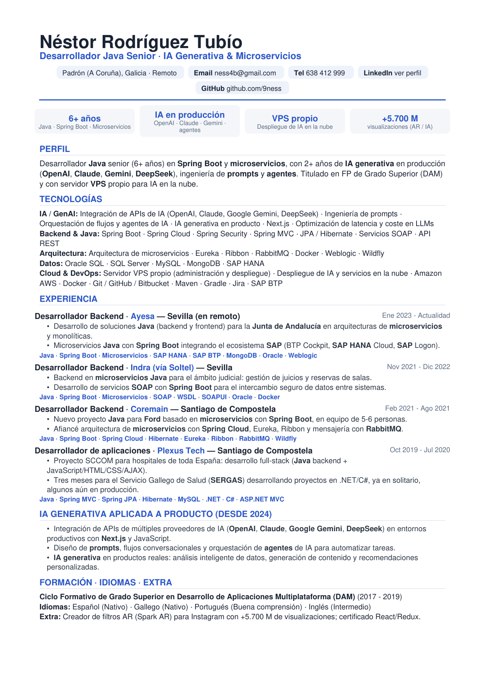
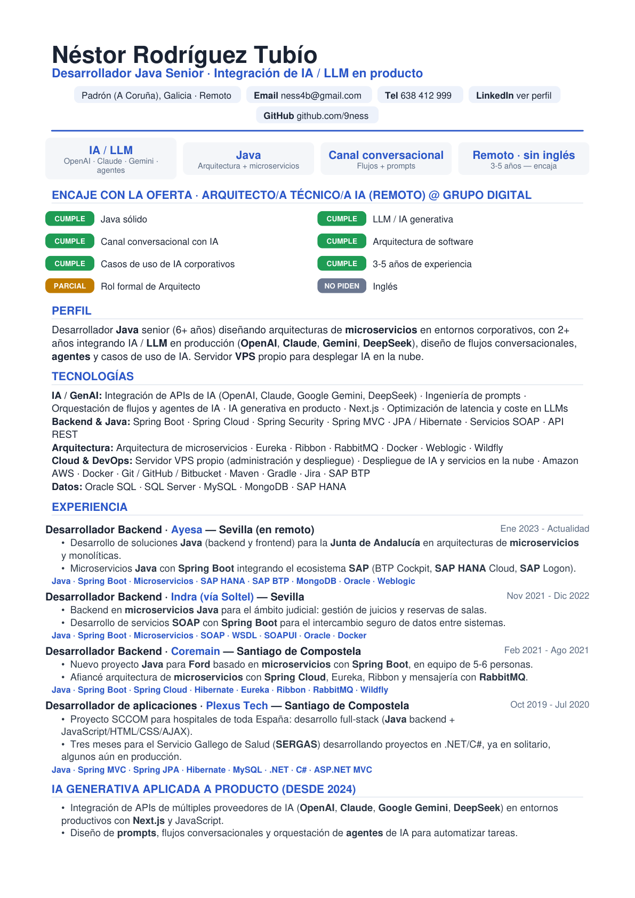
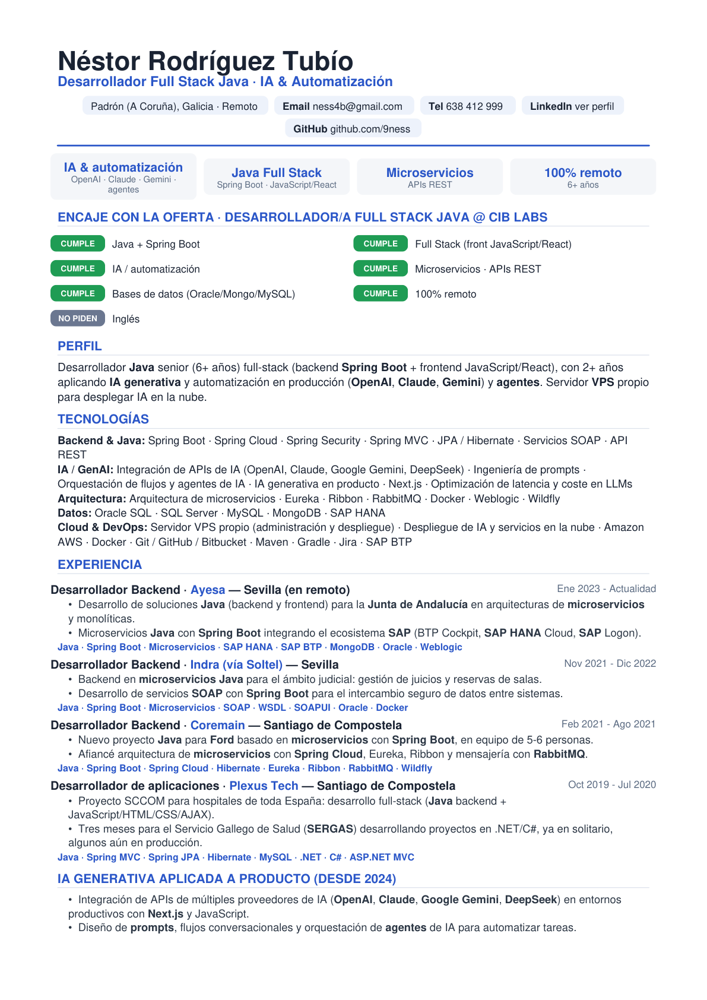
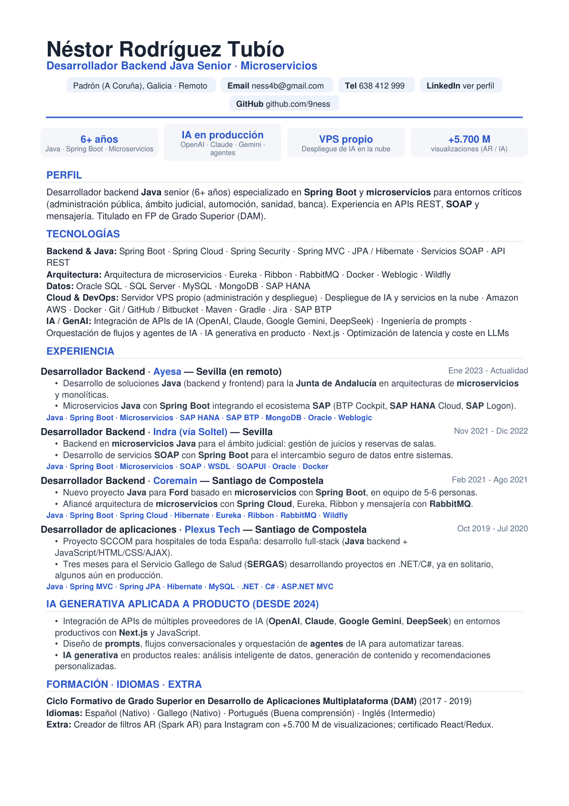
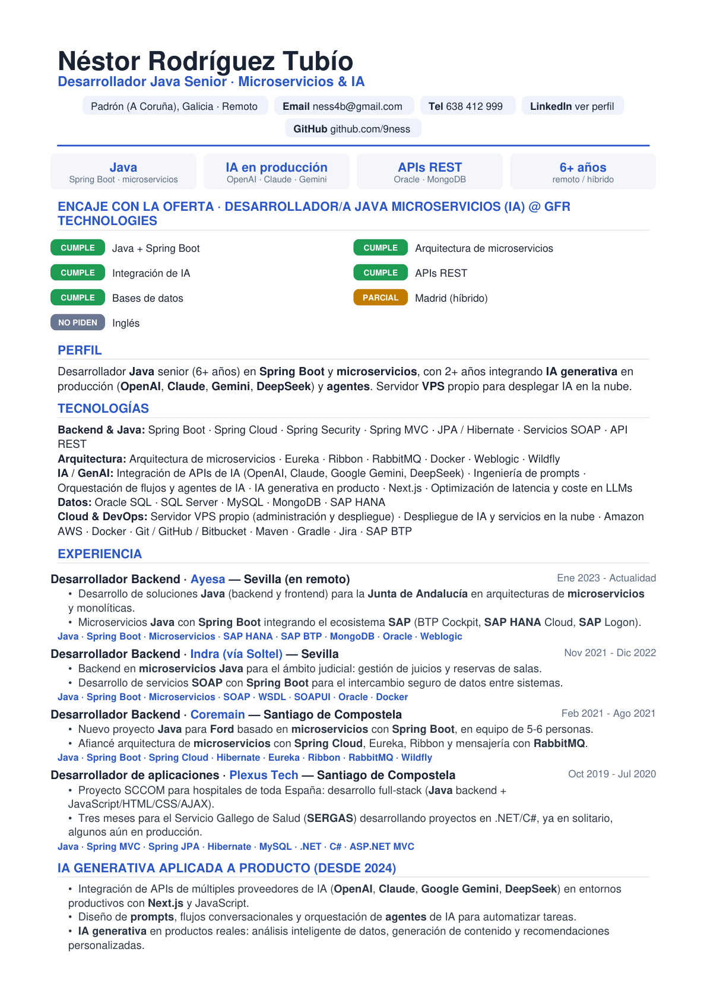
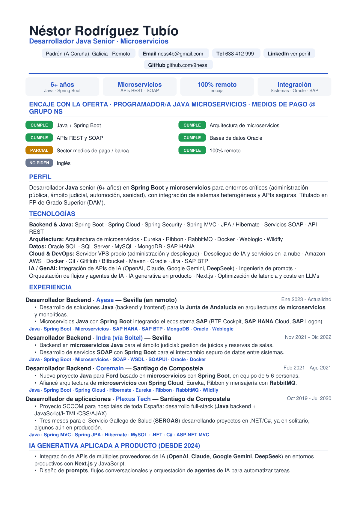
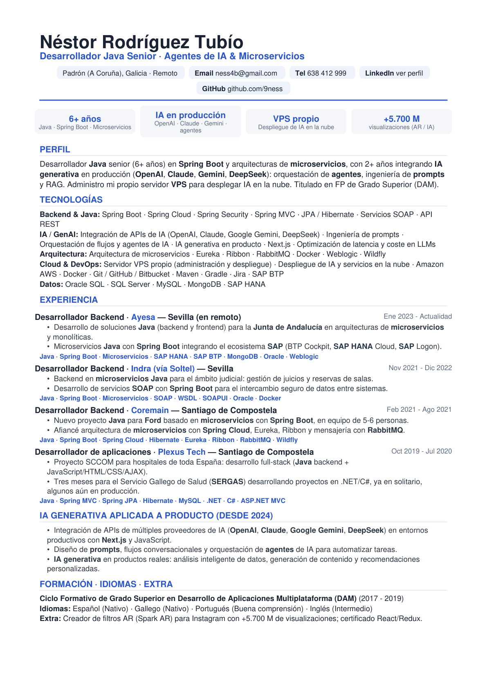
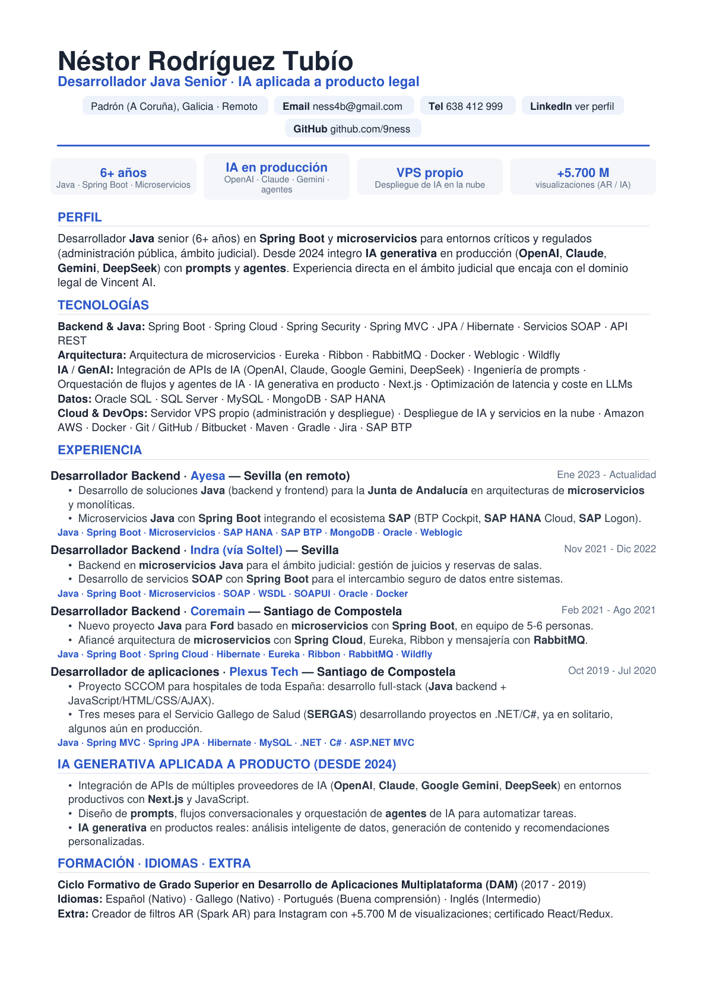
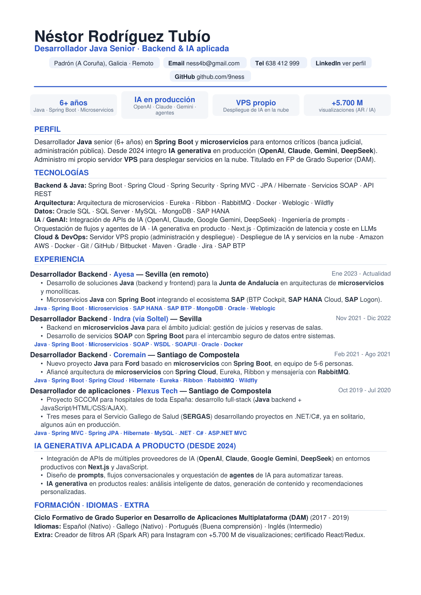

Ofertas reales (Tecnoempleo y webs de empresa, julio y noviembre 2026) que encajan con tu perfil. Cada tarjeta tiene tu CV adaptado a esa empresa y el enlace para aplicar. Ordenadas por afinidad.
← Panel💡 Recomendado: descarga el CV adaptado, ábrelo para revisarlo, y pulsa “Ver oferta y aplicar”. En Tecnoempleo te inscribes y adjuntas ese PDF. Verifica siempre sueldo y requisitos en la propia oferta antes de aplicar.
Buscadas el 17/11/2026: 100 % teletrabajo en España, sin inglés hablado, IA/agentes y ≥35k (salario confirmado solo donde se indica). Ordenadas por encaje. Aplicadas 5 el 17/11/2026: Seedtag, las 2 de Paradigma, The White Team y, fuera de esta lista, Maisa · Applied AI Engineer (startup de agentes IA, remoto Europa).

95%
90%
82%
80%
78%
75%Startups españolas de IA (encaje por perfil, no aplicadas todavía).

85%
82%
80%